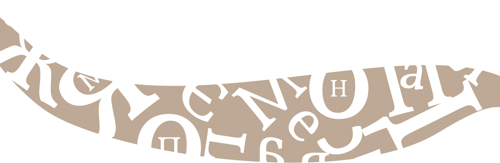

История
Изначально, Vollkorn был написан на бумаге обычной ручкой. Именно поэтому он имеет атрибуты рукописного шрифта.
Vollkorn был первой попыткой Фридриха Альтхаузена смирить дизайн шрифта, где он хотел, чтобы Vollkorn был тихим, скромным и легко читаемым.
Впервые опубликованный в 2005 году по лицензии Creative Commons Vollkorn вскоре был загружен тысячи раз и использован во всех видах веб-проектов.
